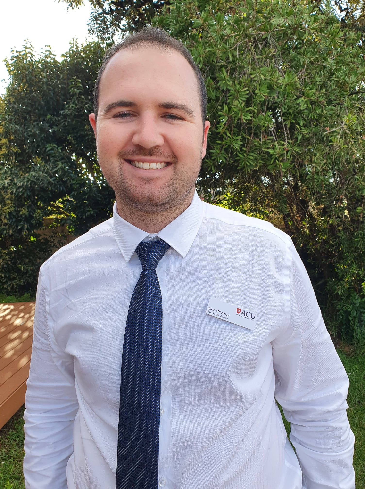
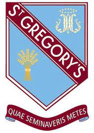

About Me
Isaac Murray
My journey to becoming a qualified Secondary school teacher.

SECONDARY EDUCATION - St. Gregory's College Campbelltown
During my time at St. Gregory's College Campbelltown, I had the privilege of immersing myself in a rich and rewarding educational journey. The school provided a nurturing environment where I thrived academically and personally. Mathematics became a source of fascination and joy for me, allowing me to excel and ultimately secure the top position in my grade, achieving a remarkable Band 6 in my HSC. Additionally, I found immense satisfaction in hands-on subjects like timber, design and technology, and construction, where I honed my practical skills and creative thinking. Earning Band 5s in my HSC for my timber and design and technology majors was a testament to my dedication and passion for these subjects. As I reflect on my schooling experience, I can't help but feel a tinge of nostalgia and gratitude. St. Gregory's College was more than an institution—it was a place where I not only acquired knowledge but also fostered a love for learning. The connections I formed with teachers and peers, along with the invaluable lessons I learned, have left an indelible mark on my journey.